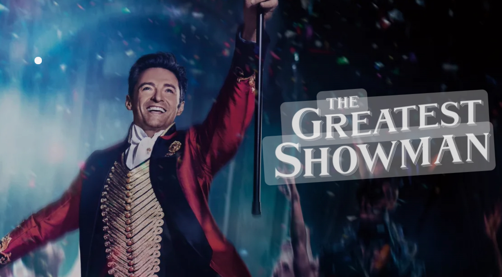

Why It's My Favorite
The Greatest Showman" isn't just a movie to me; it's a mesmerizing journey that celebrates the beauty of diversity and the power of dreams. Its electrifying soundtrack is more than music to my ears—it's the rhythm to which my heart beats, each song weaving a deeper connection with the characters' journeys. Hugh Jackman's portrayal of P.T. Barnum brings to life a story of ambition, resilience, and the endless pursuit of wonder, inspiring me to chase my own dreams, regardless of the obstacles. The film's visual splendor, combined with its uplifting messages about love, acceptance, and the value of individuality, resonates deeply with me. It's a cinematic masterpiece that not only entertains but also empowers, making "The Greatest Showman" an unforgettable experience and my all-time favorite movie.
Memorable Songs
- "This Is Me"
- "Rewrite the Stars"
- "The Greatest Show"